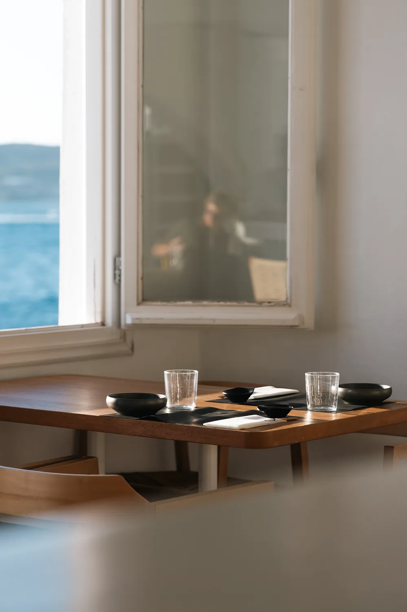

The Experience
Sushi
Taste the ocean's freshness in every bite of our expertly crafted sushi.
Suchi. Cocktails. Sunset
An Asian-fusion room in Parikia, Paros — where sharp knives, slow mixology and the Aegean sunset share the same table.

We believe a plate of sushi is a quiet song — a few honest ingredients, arranged with intention, served in the temperature of the light around it.
Bebop × Joomla is a small room in Parikia built around two obsessions: the discipline of Japanese cuisine, and the freedom of jazz. One asks for silence and precision. The other asks for improvisation. The Aegean sits between them.
Everything here is chosen slowly — the fish, the rice, the record on the turntable, the tone of the glass in your hand. We would rather do a few things beautifully than many things well.
Taste the ocean's freshness in every bite of our expertly crafted sushi.
Warm evening light frames every table and turns dinner into a full atmosphere.
As the sun melts into the sea, cocktails and small plates begin their slow dance.
A curated playlist of jazz, soul, and contemporary classics sets the mood for an unforgettable dining experience.
The sounds of our curated playlist create an immersive atmosphere, enhancing every moment of your dining experience. There is no algorithm at Bebop × Joomla. Every night begins with a spiritual jazz record — Coltrane, Alice Coltrane, Pharoah Sanders — and drifts, one record at a time, toward the deep, patient electronica of the small hours.
EXPLORE OUR MUSIC VIBES